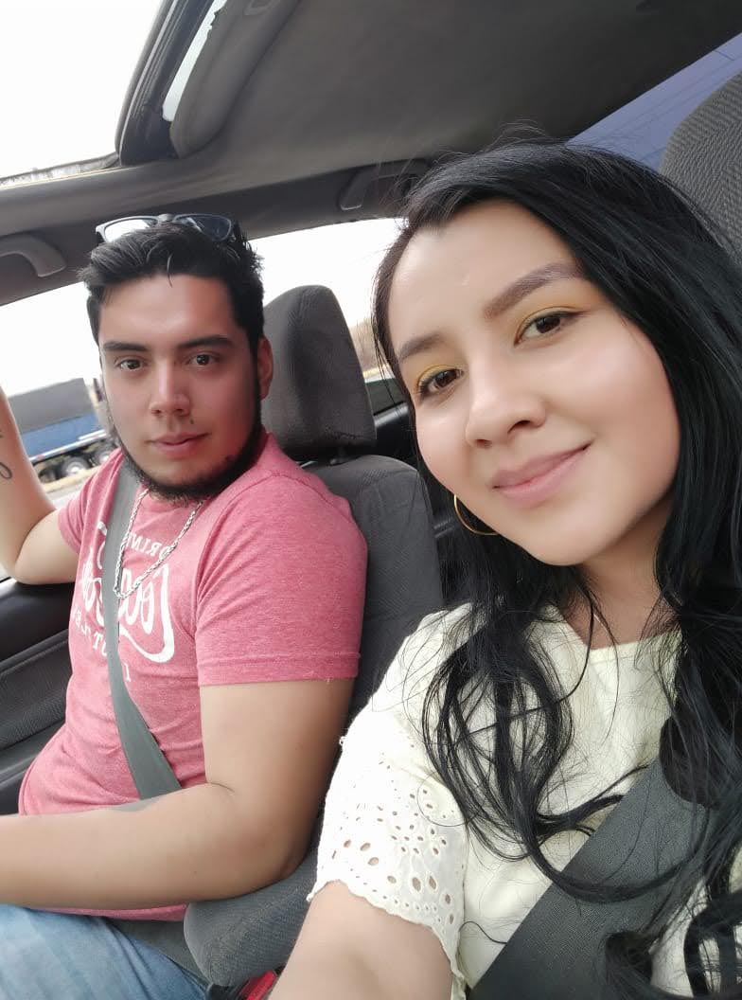
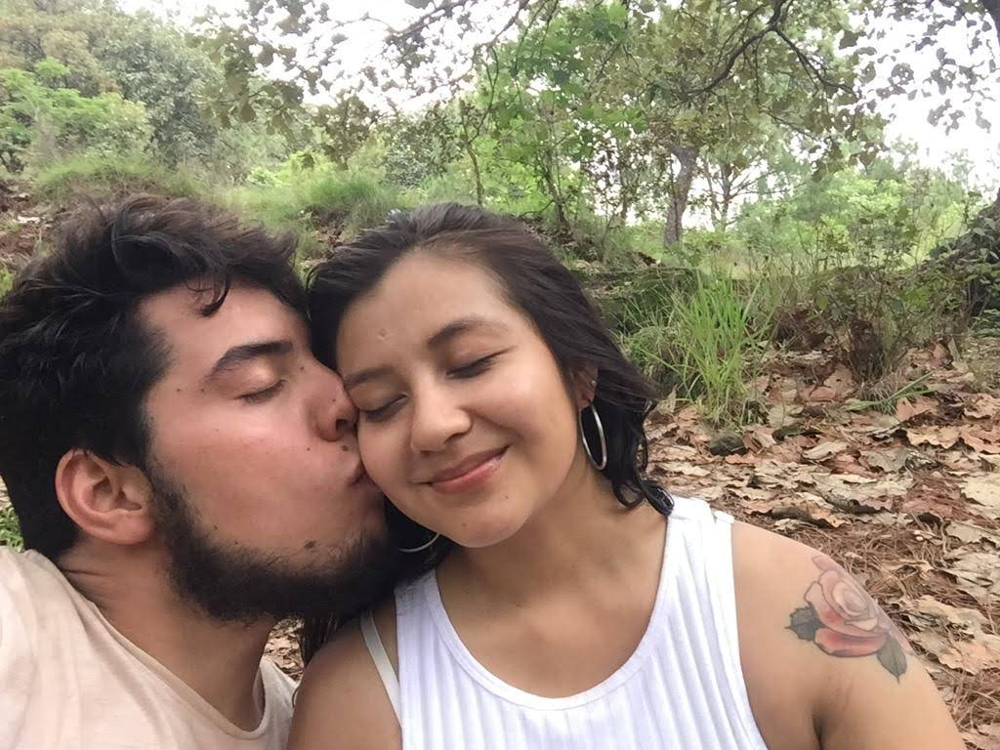
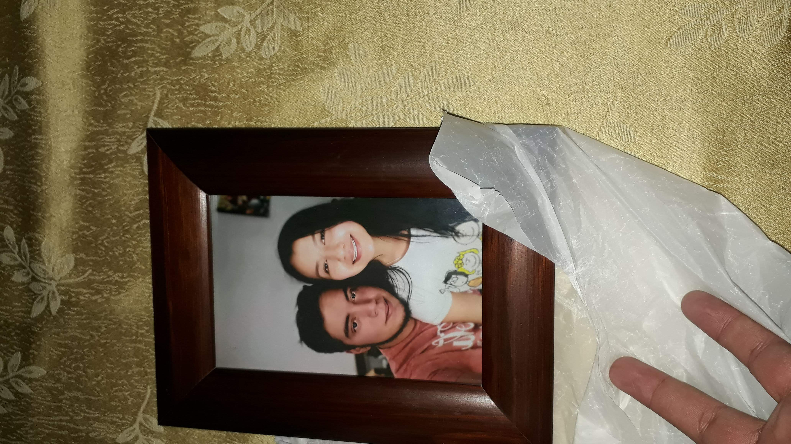
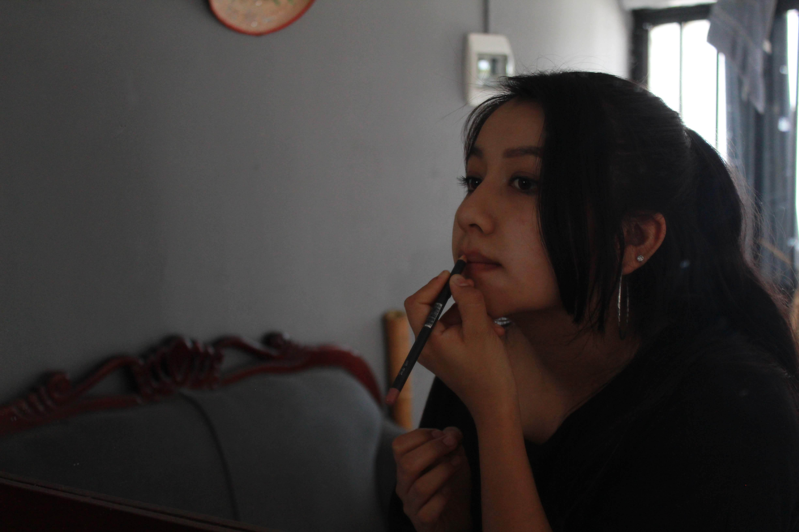
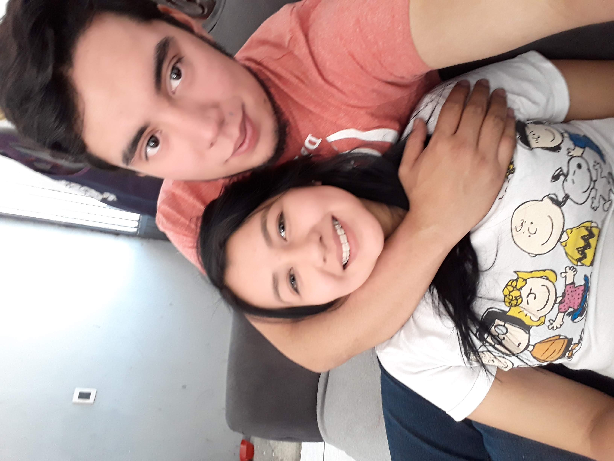
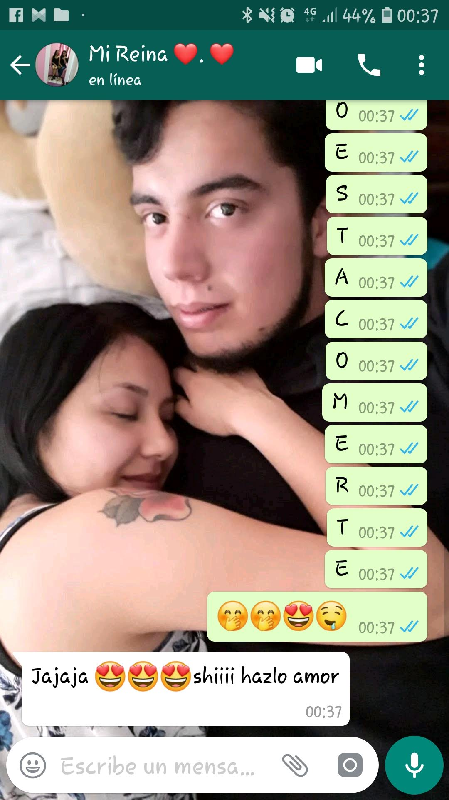

Que no quiero perderte quiero hacerte sentir como antes
quiero mirarte besarte comerte a besitos,porfis no te rindas, platicar normal como antes que me peles y te alegres,
porfis no
solo lo leas, juntos hay que darle.